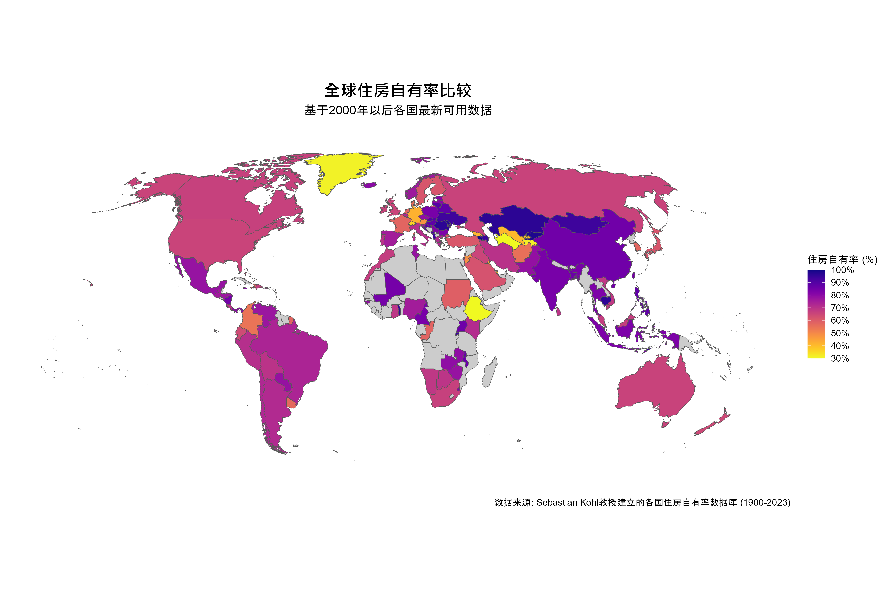
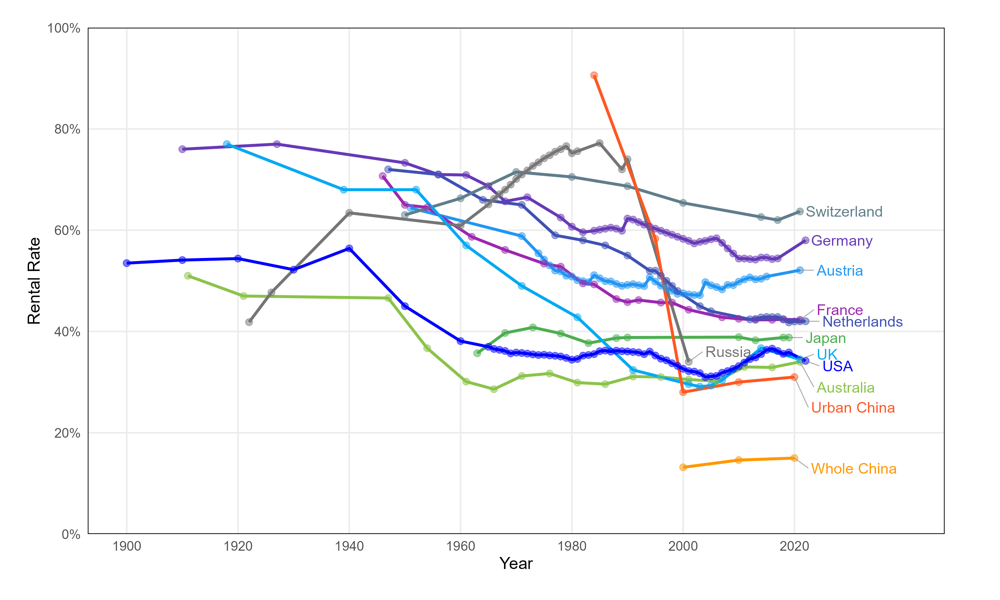
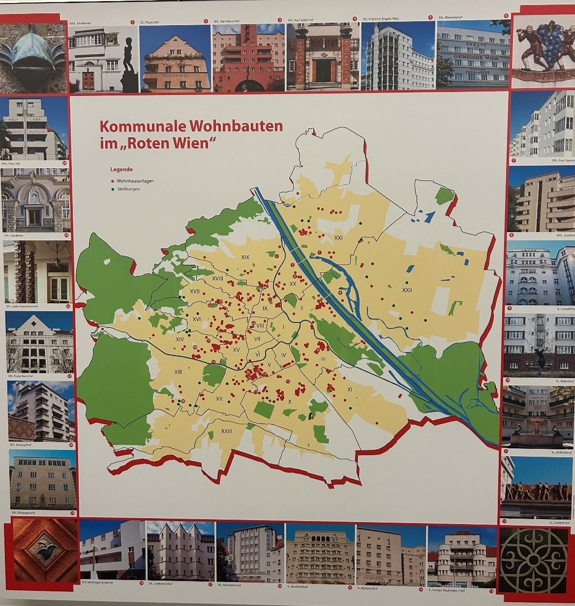

为何大部分德国人租房？——“以租为主”国家的经验与启示
This article was first published on the WeChat public account.
Original link: https://mp.weixin.qq.com/s/lfs16iBYj-xZMBZ1mKtIMA
世界上的”租房大国”
看看世界住房自有率地图，你会发现一个有趣的现象：近几十年来，几乎所有国家都以拥有自住房为主导模式。但在这片”买房热”的海洋中，有几个特殊的例外——恰恰是世界上一些最富裕的国家：德国、瑞士和奥地利。这些德语国家的大部分居民选择租房而非买房。
- 
-
数据来源：Kohl教授团队建立的155个国家1900-2016年住房自有率面板数据。
- 
-
数据来源：同上，我们用100减去住房自有率得出大致租房比例，更新了中国数据
数据告诉我们：
- 德国只有45%的家庭拥有住房
- 奥地利是48%
- 瑞士更低，只有38%，是发达国家中租房比例最高的
相比之下，美国约有70%的家庭拥有住房，英国超过65%，中国根据2020年人口普查数据，城镇地区自有率为69%，若包括农村地区则高达85%。
在德语国家，“租房”不是临时选择，也不是生活失败的标志，而是一种被社会广泛接受的生活方式。医生、教授、企业高管，社会各阶层人士安心租房，并不执着于购买住房。
我们不由得提问：为什么德国人不买房呢？他们没有焦虑感吗？
从恩格斯《住房问题》说起
1872年，恩格斯在《住房问题》中批判蒲鲁东主义者关于工人住房问题的方案时，提出了一个超越时代的洞见。
当时欧洲正经历快速工业化和城市化，工人阶级住房危机严重，住房拥挤、卫生条件恶劣、租金高昂成为普遍现象。在这一背景下，蒲鲁东主义者米尔伯格（Mülberger）——追随法国社会主义者蒲鲁东（Pierre-Joseph Proudhon）——提出了一个看似革命性的解决方案：通过法律手段将租金转化为分期付款，让工人通过多年租房最终获得住房所有权。
恩格斯尖锐地指出，这一方案本质上是对问题的回避。住房短缺不是孤立现象，而是资本主义体系的必然结果。让工人贷款买房看似解放，实则是用’房产’捆绑无产阶级。他分析道，工人成为房主后，将更加依赖资本家提供的工作（为了偿还贷款），反而削弱了工人的抗争能力；同时，由于住房仍需大量资金建造，资本家只会通过降低工资等方式将成本转嫁给工人，工人实际处境并未改善。
恩格斯还有一个很有先见之明的观点，他反对把房子当作工人的”私人保障”或”小金库”。他指出，当工人失业时，他们往往无法以好价格卖掉自己的房子，因为经济不景气的时候，房地产市场也跟着一起萎靡。
恩格斯认为，蒲鲁东主义者的方案犯了两个根本性错误：一是将住房问题简化为单纯的租金问题，忽视了它是整个资本主义制度的必然产物；二是试图通过法律手段（改变租金形式）解决本质上的经济问题，而非从生产关系入手。他讽刺道，工人阶级从经济奴役中解放出来的唯一办法，不是变成小房主，而是消除资本主义剥削制度本身。
恩格斯的分析不仅针对当时的住房解决方案——他认为这些方案是小资产阶级和反动的——还包含了对住房本质的深刻思考：住房首先是满足人类基本需求的使用品，而非简单的商品或投资工具。在他看来，真正解决住房问题的关键在于改变整个生产关系，而非在分配层面做出调整。恩格斯对”房主社会”的担忧在德语区国家（德国、奥地利、瑞士）似乎找到了回应。这些国家是发达世界中少数住房自有率长期低于50%的地区，与全球不断增长的住房自有率趋势背道而驰。
意识形态的差异：家与资产的不同解读
德语区国家与中国在住房观念上的差异可追溯到深层次的文化和历史脉络。
在中国传统文化中，“有恒产者有恒心”的观念根深蒂固。拥有住房不仅关乎居住需求，更是家庭稳定、社会地位的象征。改革开放后的住房商品化，又赋予住房强烈的资产属性，成为财富积累的重要途径。“有房才有家”的观念在婚恋市场尤为明显。
相比之下，德语区国家的住房观念更加功能化。住房首先是满足居住需求的使用物，其资产属性则相对次要。德国人普遍认为，只要居住条件稳定、品质良好，租房与买房在生活质量上并无本质区别。这与英语国家形成对比。Reisenbichler 和Koenig最新的调研[1]显示：英国居民常常对房价上涨欢欣鼓舞，德国的调查受访者则认为这是一个令人担忧的原因，并支持限制过度价格以及租金增长的政治措施。
更为关键的是，德语国家拥有相对完善的社会保障体系，比斯麦的养老金改革可追溯到19世纪80年代。所以居民不需要通过住房积累财富来应对退休和医疗等风险。住房被排除在主要投资选择之外，使租房成为理性的居住决策。
制度基石：铸就强大租赁市场的三大支柱
德语区国家的租赁市场之所以能够长期繁荣，得益于三大制度支柱：租户保护法、多元供给体系和稳定的金融支持。
租户保护法：赋予租房”准所有权”
德语区国家的租赁法律赋予租户几乎接近”准所有权”的保障：
租期保护：德国租赁合同通常没有固定期限，房东需要有充分理由（如自用）才能终止合同
租金稳定：德国实施绝对租金水平控制，使用当地参考租金系统和”租金刹车”限制租金上涨；奥地利采用”成本租金”原则，新住房租金基于实际成本
居住自主：租户可在合理范围内自主装修改造住房，无需征得房东同意
租约继承：德国允许租约在家庭成员间继承，进一步强化了居住稳定性
德国私人租赁合同的监管可追溯到战时社会主义（第一次世界大战期间保护前线士兵家庭），随后过渡为稳定政治动荡的魏玛时期的更为永久的市场监管。同样，第二次世界大战期间的严格战时措施在20世纪70年代逐渐转变为可行的市场监管制度。通过这种方式，德国将受监管的私人租赁部门作为另一种形式的社会政策，同时进行大规模战后社会租赁住房建设。
奥地利因其更广泛的社会住房建设而闻名，尤其是红色维也纳的遗产，使首都成为欧洲同等规模城市中社会住房最多的城市。
一位维也纳居民的经历很有代表性：“我已在同一公寓住了28年，搬了三次家，但始终在同一栋楼内。我们的孩子在这里出生、成长并离家，而我们继续住在这里，以后也会继续住下去。”这几乎让人联想到（苏联）社会主义下的租赁安排，由于其几乎绝对的租期保障，被视为一种准所有权。
历史学者马克·史密斯(Mark B.Smith)在其著作《共产党人的财产：从斯大林到赫鲁晓夫的城市住房计划》中指出，在苏联住房体系下，租户实际享有”居住安全保障、私人空间不可侵犯性和继承权”等准所有权特征[2]。这一现象在中国的单位分房制度中也有所体现，单位住房的稳定性和长期使用权实际上为后来的住房私有化和”有房社会”奠定了基础。然而，住房市场和政策发展往往存在矫枉过正的倾向，过于集中于单一住房模式。随着住房制度改革，中国人曾经拥有的单位房稳定租期优势已一去不返，如今在私人租赁市场上，这种长期稳定的居住体验几乎不可能再现。
多元供给体系：不止市场与政府
德语区租赁市场的另一特色是多元化的住房供给体系，打破了”政府vs市场”的简单对立。除私人出租外，还有三类重要供给主体：
公共住房公司：政府控股但企业化运营，如柏林的Degewo管理约6万套公寓
租赁住房合作社：这是一种集体住房模式，成员共同拥有整个住宅项目，每个人不是买房，而是购买合作社的股份并获得长期居住权。在德国，特别是柏林等大城市，这种模式很受欢迎，占住房总量的10%以上[3]。加入非常经济实惠，一般只需支付相当于三个月租金的入会费，远低于购买整套房子的价格，因此普通工人也能负担。德国社会民主党从1900年代初就支持这种模式，认为它让工人既能有稳定住所，又能在需要时方便地搬迁找工作。与北欧国家那种最终转为私人所有的合作社不同，德国的这种合作社会长期存在并不断建设新住房，形成可持续发展的住房供应体系
有限盈利住房协会：利润上限的准社会企业，如奥地利的LPHA。奥地利的社会住房模式，尤其是维也纳，格外引人注目。该市44%的住房由社会导向机构提供：23%市政公共住房和21%有限盈利住房协会住房[4]。这些住所不仅向低收入群体开放，也向中产阶级开放，有效避免了贫困集中和污名化。由于它们相对均匀地分布在所有社区——包括新建设中要求混合租赁形式——它们是对抗社会隔离的住房手段。
- 
-
来源：笔者摄于马克思大院博物馆，2025
这张地图展示了奥地利维也纳在”红色维也纳”时期（1919-1934年）建造的公共住房项目分布。当时，社会民主党执政的维也纳市政府启动了欧洲最大规模的公共住房建设计划，在短短15年间建造了超过6万套住房，约占当时维也纳人口的10%。
图中红点标记的”Wohnhausanlagen”（住宅区）是大型公寓楼群，如著名的Karl-Marx-Hof（马克思大院）；绿点标记的”Siedlungen”（定居点）则是较低密度的花园式住宅区。这些住房项目不仅提供了物理空间，还配备了幼儿园、洗衣房、医疗设施等社区服务，体现了”住房不仅是庇护所，还应是社会基础设施”的理念。
一个世纪后，这些建筑大多仍在使用，构成了维也纳社会住房体系的重要组成部分。更重要的是，“红色维也纳”的住房实践奠定了维也纳社会住房的制度基础和价值取向，形成了城市记忆和政策传统，使维也纳在住房商品化浪潮中依然保持着高比例的社会住房。这张地图不仅是历史文献，也是一个城市对社会住房长期承诺的见证。
就在上个月，笔者有幸参观了马克思大院。这座建于1927-1930年的宏伟建筑，有1,382套公寓，内含幼儿园、图书馆、医疗中心等设施，至今仍是维也纳社会住房的标志性象征。在与奥地利限利润住房协会联合会(Österreichischer Verband gemeinnütziger Bauvereinigungen)的研究员交流时，他们自豪地表示，维也纳的社会住房不仅解决了居住问题，还成为城市文化和社会融合的场所，不断有其他国家的游客、学者、政策制定者前来学习，甚至有一位美国的女士“被感动地落泪”。
维也纳限利润住房协会的运作模式具有启发性。它们遵循成本租金原则，即租金仅覆盖规划、建设、融资和管理的实际成本，既不低于成本（确保可持续），也不高于成本（避免暴利）。随着贷款还清（通常30-40年后），租金会降至更低的基础水平，体现了代际公平。
金融支持：长期稳定与市场化的张力
德语区租赁住房的发展离不开金融支持，但各国模式存在显著差异，也面临各自的挑战。
奥地利建立了相对完善的长期稳定资金来源体系：
住房建设债券：自1993年推出住房建设可转换债券，提供资本利得税优惠，截至2023年已为限利润住房筹集约233亿欧元[5]
公共低息贷款：区域政府提供利率仅1%的长期贷款
循环基金：限利润住房协会产生的盈余被强制再投资于新建住房，形成自我再生系统
德国支持住房发展的方式很特别。政府一方面通过专项基金和税收优惠支持公共住房建设，另一方面也鼓励私人投资者参与租赁市场。这些投资者不仅包括大型开发商，还包括普通家庭在自己房子上增加出租单元。德国的房产税和遗产税很低，且没有财富税，这使得普通家庭购买房产用于出租变得很有吸引力，成为住房市场的重要资金来源。这种模式在二战后变得非常普遍，因为它减轻了政府在扩大住房供给方面的财政压力，让私人资本承担了部分住房建设的责任。
最近德国公共住房存量的情况更为复杂。许多曾经受到租金管控的公租房，在还清了政府提供的建设资金后，就不再有租金限制，变成了普通的私人出租房。将社会住房地位与公共抵押贷款支持的偿还挂钩有这样的好处：它能激励更多高质量社会住房的建设，这些住房也能满足未来市场租户的需求，但这也意味着内置了未来转换的种子。结果，德国的公共住房比例目前低于5%。新的社会住房单位实际上看不到增长的迹象。
一方面，德国政府在财政政策上相对保守，不愿大量借贷来支持住房建设；另一方面，柏林等主要城市的租赁市场近年来经历了高度金融化，大型房地产投资公司如Vonovia和Deutsche Wohnen收购了大量住房，导致租金上涨和居民抗议。2021年，柏林市民甚至通过了一项公投，要求将大型房地产公司拥有的住房收归公有(尽管这一决议后来被法院裁定为违宪)。这表明德国模式并不完美，也面临资本逐利和住房权保护之间的矛盾。
瑞士走了一条略有不同的道路，尤其是在其最大的城市。瑞士通过住房合作社提供了约8%的住房，同时保持了相对宽松的租赁管理制度，因此拥有全球最大的私人租赁市场之一。瑞士模式的一个特别之处在于职业养老金基金对国内房地产的大量投资。这形成了一种独特循环：瑞士租户的租金部分流向了这些养老金基金，而这些基金又为瑞士退休人员提供补充收入。这种模式有效利用了瑞士庞大的退休金资金池，创造了一个相互依存的经济关系。
租赁市场与福利制度的关联
为什么德语区国家能发展出如此不同的住房体系？这一现象可以通过住房学者吉姆·凯米尼（Jim Kemeny）和福利国家理论家埃斯平-安德森（Esping-Andersen）的理论来理解。 凯米尼提出的”租赁市场二元论”将西方国家的租赁市场分为两种类型：
二元租赁市场（英美模式）：社会住房仅面向贫困人口，形成残余化的公共部门与主导的私人租赁/自有住房部门的二元分化
统一租赁市场（德奥模式）：社会导向型住房面向广泛人群，与私人租赁市场竞争，形成统一的租赁市场
凯米尼认为，统一租赁市场能够抑制整体租金水平，使租赁成为长期稳定的居住选择，进而影响住房自有率。 这一理论与埃斯平-安德森的福利国家类型学有密切联系。埃斯平-安德森将福利国家分为三种类型：
自由主义福利国家（如美国、英国）：市场主导，社会福利残余化
保守主义/社团主义福利国家（如德国、奥地利）：强调社会伙伴关系和地位维持
社会民主主义福利国家（如北欧国家）：普遍主义福利，强调平等
德语区国家属于保守主义福利模式，强调社会团结和地位保障，这种思路也延伸到住房政策：通过非营利组织提供住房，维持社会稳定，避免市场化带来的不平等。这一理论框架帮助我们理解为什么住房体系在不同国家呈现如此大的差异。住房不仅是独立的政策领域，还与整个社会保障体系和福利国家类型紧密相连。一个国家的租赁市场结构，某种程度上反映了其福利制度的基本取向。
中国租赁住房发展的理论路径
住房问题的本质
从恩格斯的批判理论到德语国家的实践经验，我们可以得出一个基本理论观点：住房问题不是孤立现象，而是整体社会经济系统的表征。笔者博士论文对中国的私人租赁市场做出深入系统性地分析，也得出同样的结论。德语国家租赁住房体系的成功建立在其完善的社会福利体系和劳动市场结构之上。这一理论视角对中国发展租赁住房具有重要启示：我们需要跳出住房政策本身的局限，将住房问题置于更广阔的制度与社会框架中理解。德语国家的经验表明，通过合理的制度设计，可以使住房更好地回归其居住本质。
福利体系与租购同权的制度关联
借鉴肯尼梅和埃斯平-安德森的福利理论，福利体系与住房选择存在深刻关联，这也构成了实现”租购同权”的制度基础。德语国家与中国的福利体系差异主要体现在两个核心维度：
首先，基本需求的保障方式构成根本区别。德语国家通过完善的社会保障体系，将医疗、教育、养老等基本需求较大程度地从市场机制中分离出来，由社会共同保障。个人不必过度依赖私人资产来应对疾病、失业、养老等风险，住房因此主要承担居住功能。此外，在德语国家，学校选择不太依赖于居住地，因为德国的教育体系更注重学生的能力分流和个人发展需求，而非住址限制。家长可申请任何适合子女学术水平的学校，因此没有”学区房”溢价现象，政府也确保各区域学校质量相对均衡，从而为所有家庭提供了更公平的教育机会。而中国的基本需求保障更多依赖市场和家庭，住房不仅是居所，还被赋予获取优质教育、医疗资源的工具属性，并成为应对生活风险的重要”安全垫”。“租购同权”的实现首先需要加强社会保障，减轻住房承载的过多社会功能。
其次，福利的普遍性与分层性形成显著差异。德语国家福利普惠性较强，不同群体间差距有限；中国则存在明显的户籍、地域福利分层，促使人们通过购买特定区域住房来获取相应公共服务，形成”用财产权换福利权”的模式。真正的”租购同权”需要解决户籍制度、学区房制度等结构性问题，消除租房者在公共服务获取上的制度性劣势。
劳动关系与住房模式的辩证统一
回归恩格斯的核心洞见，住房问题的本质是生产关系的反映。劳动力市场结构与住房模式存在内在联系。稳定的劳动关系为长期租赁提供社会基础。德国相对稳定的就业关系为其租赁市场的稳定运行提供了重要支撑。相比之下，就业不稳定性较高的经济体中，人们往往倾向于通过房产所有权来对冲就业风险。反过来也是如此，经济学家Andrew Oswald 在1996年提出了一个著名假设[6]，认为高房屋自有率实际上可能通过限制劳动力流动性和商业发展而导致失业率上升，因为房主不太可能为了就业机会而搬迁，且可能会反对当地的商业发展。该假设近年来也被一些研究证实[7]。
长期租赁关系其实就像是长期雇佣合同的翻版，后者传统上是由雇主和工会通过集体工资谈判达成的。在租房市场上，很多城市也有类似的集体租金谈判机制，租户组织、房东协会和政府一起制定当地的参考租金标准，用来判断市场租金是否过高（市场租金不能超过参考租金的10%）。瑞典等国家的集体租金谈判机制更加强大，覆盖全国范围，这种机制有助于缓解私人租赁市场的矛盾。这实际上体现了一种”组织同构”现象，即租赁市场的制度安排在结构和功能上模仿了劳动力市场中的集体谈判模式，两者采用相似的机制来平衡不同利益方的权力关系。
收入分配结构对住房消费模式也有深远影响。在收入分配更加平等的社会中，大多数人的购买力相对接近，使得租房市场能够为广泛的人群提供服务，而不仅仅是为那些买不起房的人。当社会中大部分人的经济能力相似时，租房不会被视为经济失败的标志，而是一种理性的选择。因此，收入不平等与住房不平等之间存在明显的传导机制。德语国家相对平等的收入分配（虽然远非社会主义水平的平等）为其租赁市场的普遍性奠定了经济基础，减少了人们将房产视为财富积累和社会地位象征的压力。值得注意的是，尽管存在这种相对的收入平等，德国仍然存在高度的财富不平等，这主要来源于企业所有权和住房资产本身。这突显了收入、财富和住房系统之间的复杂关系。恩格斯对工人住房问题和资本主义劳资关系的批判在当代背景下仍具有启示意义：解决住房问题的根本途径必然涉及对劳资关系的调整。
财政金融制度与住房市场的制度关联
住房市场的运行嵌入在更广泛的财政金融制度中。地方财政结构对住房供给具有制度性影响，土地财政依赖与住房商品化之间形成自强化循环。德语国家的地方财政相对多元化，减轻了推高房价的制度压力。中国的租赁住房发展需要考虑地方财政体制改革的配套推进，减少对土地出让金的过度依赖。
在税收制度方面，中国住房市场呈现出”前端重、后端轻”的独特结构。国家主要通过土地出让金和房产交易环节的各类税费获取财政收入，而在房产持有和租赁环节则税负较轻。虽然中国房产交易环节的税费清单看似繁多，但实际上设置了大量免征条件：个人出售普通住房满2年可免征5%的增值税；“满五唯一”（持有满5年且为家庭唯一住房）可免征个人所得税；个人出售住宅暂免征收土地增值税；购房方面，首套普通住房契税最低仅需1%。这种优惠政策使中国二手房实际交易税负远低于德国等国家的10%-14%。这种税收结构反映了中国特殊的财政体制：地方政府高度依赖土地出让金和与房地产开发相关的税收来满足财政需求，从而形成了推动新房开发、激励中短期持有后交易，而非鼓励长期持有或出租的制度激励。
这一税收体系的深层影响在于：它促使住房更多地被视为交易品而非使用品，强化了其资产属性而弱化了居住功能。由于持有环节缺乏足够的税收约束（如有效的房产税和空置税），加上免征政策激励了2-5年的持有周期，以及房价长期上涨创造的资本利得远超交易成本，开发商和投资者倾向于加速周转，追求短期资本利得；普通家庭则被鼓励将住房视为投资渠道。这种激励机制与德语国家形成鲜明对比——在德国，即使最基本的房产转让税也高达3.5%-6.5%（各州不同），再加上公证费、经纪佣金等，总体交易成本约10%-14%，足以显著抑制投机性购买。德国的高转让税与相对稳定的房价形成互补关系，加上完善的租户保护制度，共同引导住房回归居住本质。因此，可以说德国整体税收结构通过抑制投机和鼓励长期房产持有与租赁安排，促进了住房市场的稳定。
从制度变革的角度看，中国住房税收体系的调整可能需要从”前端重、后端轻”向更加均衡的结构转变：适当减轻土地出让和房产交易环节的税负，同时逐步建立房产持有环节的合理税负，并通过租赁环节的差异化税收政策（如对长期租赁合同的税收优惠）来引导市场行为。这种转变不仅关乎住房市场的健康发展，更涉及地方财政体制的深层次改革，是一个复杂而系统的长期过程。
结语：面向租购同权的未来
德语国家百年住房实践告诉我们，成熟的住房制度应为居民提供多样选择，而非将所有人推向单一居住路径。无论租房还是买房，人人都应能获得稳定、体面、可负担的居住条件。
回到恩格斯在《住房问题》中的核心思想：住房短缺不是某些特殊情况偶然引起的现象，而是我们现存社会制度的必然产物；在这种社会制度下，它不能通过个别措施治愈，就像所有其他社会不公一样。所谓解决住房短缺的方案是与解决社会问题本身同时提出的。
德语国家的租赁住房制度，以其多元供给和社会导向，提供了一种平衡方式：它们既承认市场机制在资源配置中的作用，同时通过制度设计确保住房的社会属性，使住房首先满足人类基本需求，而非纯粹成为商品或投资工具。这是德国人能够安心租房，让住房回归居住本质的根本原因。
在构建中国特色住房制度的新征程中，我们必须认识到恩格斯所警示的：仅仅改变租金形式或促进个体所有权并不能从根本上解决住房问题。真正的解决之道在于将住房问题置于更广阔的社会经济框架中，通过完善社会保障体系，推动劳动关系变革，改革财政金融制度，最终实现”租者有其居，买者有其房”的美好愿景。
参考文献
[1] Reisenbichler, A., & Koenig, P. D. (2024). Cause for Celebration or Concern? Voter Reactions to Rising House Prices. Comparative Political Studies, 00104140241269896.
[2] Mark B. Smith, Property of Communists: The Urban Housing Program from Stalin to Khrushchev. DeKalb, IL: University of Northern Illinois Press, 2010. 240 pp.
[3] Kohl, Sebastian, and Jardar Sørvoll. 2021. “Varieties of Social Democracy and Cooperativism: Explaining the divergence between housing regimes in Nordic and German-speaking countries.” Social Science History 45 (3):561-587.
[4] Kössl, G. (2022). The system of limited-profit housing in Austria: cost-rents, revolving funds, and economic impacts. In The system of limited-profit housing in Austria: cost-rents, revolving funds, and economic impacts: Kössl, Gerald. Liège (Belgium): CIRIEC International, Université de Liège.
[5] Kössl, G. (2024). Housing bonds and their role for limited-profit housing associations in Austria. In Housing bonds and their role for limited-profit housing associations in Austria: Kössl, Gerald. Liège (Belgium): CIRIEC International, Université de Liège.
[6] Oswald, A. J. (1996). A conjecture on the explanation for high unemployment in the industrialized nations: Part I.
[7] Wolf, N., & Caruana-Galizia, P. (2015). Bombs, homes, and jobs: Revisiting the Oswald hypothesis for Germany. Economics Letters, 135, 65-68.